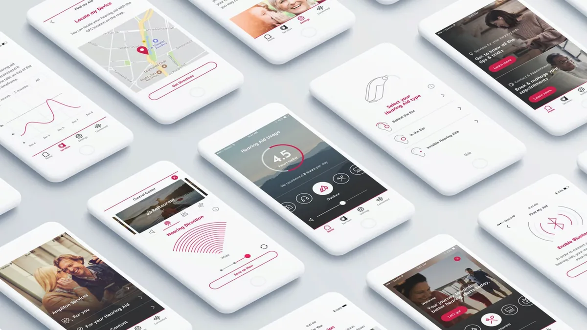
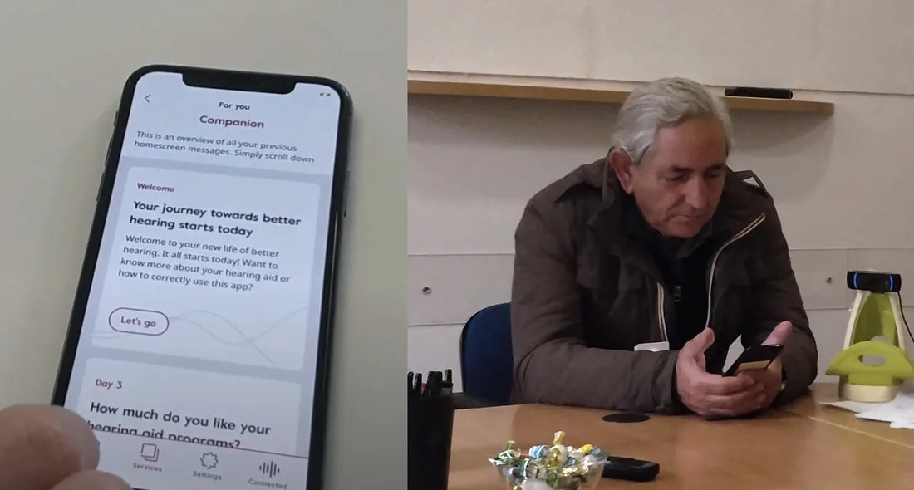
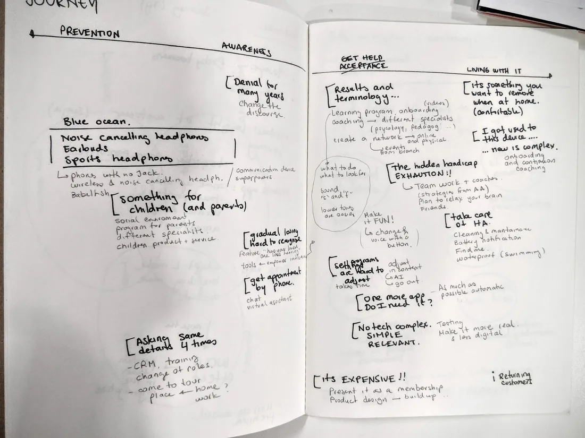

The brief was a control app. The problem was the first weeks.
Millions of people delay getting hearing aids, and many who get them stop wearing them. Amplifon asked for an app to control the device. Research across Italy said the device was not the hard part.
Short read
- The problem
- Amplifon asked for an app to control a hearing aid. Many people who get hearing aids stop wearing them.
- What I saw
- Research with users and audiologists across Italy showed the first weeks were the whole game: discomfort, uncertainty and quiet embarrassment, not trouble with buttons.
- What I did
- We stopped designing a remote control and designed the adjustment: guidance spread across the first weeks, complex settings made small, visible progress, and reassuring language, tested repeatedly with older users.
- The outcome
- Six international design awards, and more than 6,500 downloads in the first four months.

People were not struggling with the buttons.
I ran qualitative research with hearing aid users and audiologists across Italy, mapping what really happens after someone is fitted. The first weeks turned out to be the whole game. People were uncomfortable, unsure how to adjust the device, disappointed that the world did not sound the way they expected, and quietly embarrassed about wearing one at all. A better control panel would not touch any of that.
We stopped designing a remote control and started designing the adjustment.
Guidance that arrives when it is needed
Support spread across the first weeks rather than dumped into setup, so people met each piece of advice at the moment it made sense.
Complex adjustments made small
The settings that audiologists care about, broken into actions an eighty year old can take on a phone without fear of breaking something.
Progress made visible
Wearing hearing aids is a habit before it is a preference. The app reinforced progress so the habit had something to hold on to.
Language that reduced the stigma
Reassuring rather than clinical. The tone was a design decision, and it was tested with older users like everything else.



Six international awards, and a product people kept using.
The Drum DADI, EPICA Bronze, BIMA, OMMA, One Show Merit and the Digital Impact Awards, with more than 6,500 downloads in the first four months. The part I value is that the awards were for a product that changed behaviour in an emotionally difficult moment, not for a nice interface.